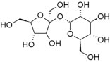

| Chapter 6.2: Why do some things form solutions and others not? |
If you take 50 mL of ethanol and add it
to 50 mL of water (you can do this in a lab if you have a 100 mL
graduated cylinder) you will find, perhaps surprisingly, that the
volume of the resulting solution is less than 100 mL, it is in fact
about 98 mL, assuming good technique (no spilling). How can we explain
this observation? Well, first we can reassure ourselves that matter
has not been destroyed – if we weigh the solution, it weighs
the same as 50 mL of water plus 50 mL of ethanol. This means that
the density of the water:ethanol solution must be greater than the
density of either the water or ethanol solutions alone. If we think
molecularly, we can immediately deduce that in the ethanol and water
mixture the molecules are closer together than they are when pure
(before mixing). On the other hand, if you take 50mL of oil and 50
mL of water, we find that they do not mix – no matter how hard
we try, they always separate away from one another in two layers.
What factors determine whether substances will form solutions? |
6.1 Solutions |
|
Question to answer:
Questions to ponder:
|
If we look at the structure of compounds that dissolve in water, we can begin to see some trends: hydrocarbons, that is compounds composed of only carbon and hydrogen (chapter 4) are not very soluble in water, while alcohols (that is: hydrocarbons with an -OH group attached) with up to 3 carbons are completely soluble. As the number of carbon atoms increases the solubility in water decreases, for example: hexanol (CH3CH2CH2CH2CH2CH2OH) is only very slightly soluble in water (0.4 g/L). So perhaps the hydroxyl (–OH) group is responsible. We get evidence in support of this hypothesis from the fact that diols, compounds with 2 –OH groups, are more soluble than similar alcohols. |
| For example compared to hexanol, 1,6-hexanediol (HOCH2CH2CH2CH2CH2CH2CH2OH) is quite soluble in water. Other more familiar water soluble compounds, such as the sugars glucose, fructose, and sucrose (shown), which is a dimer of glucose and fructose, are, in fact, polyalcohols. Each of their six carbons is attached to a hydroxyl group. |  |
Question to answer:
Questions for later:
|
| 17-Jun-2012 |